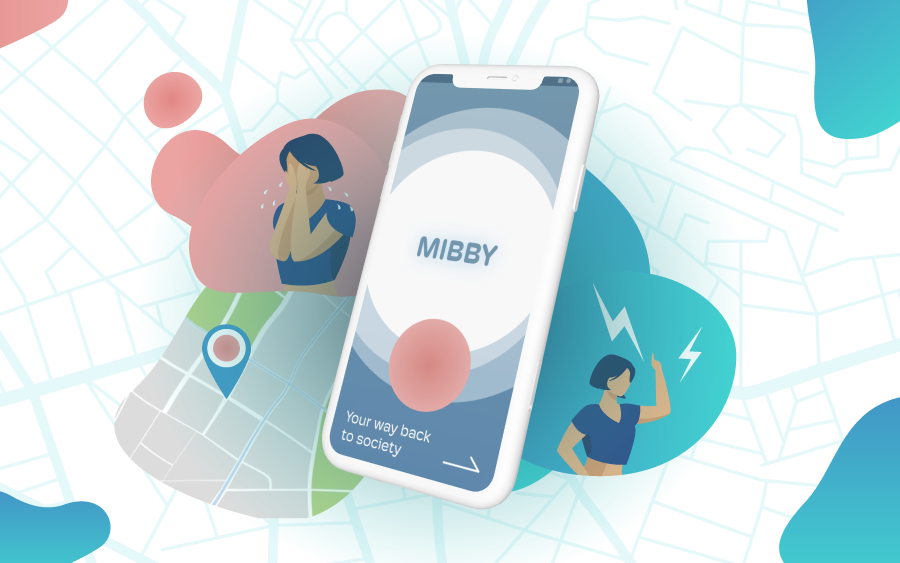
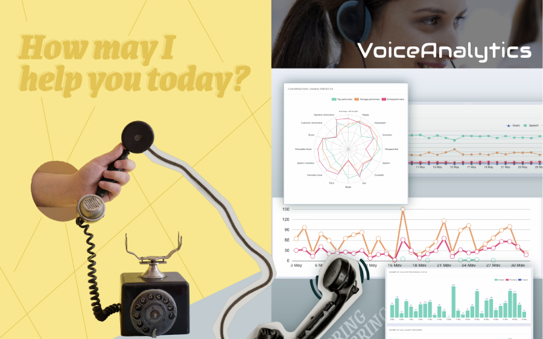
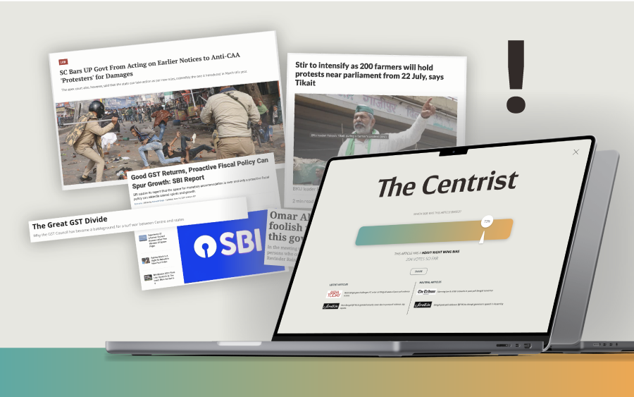
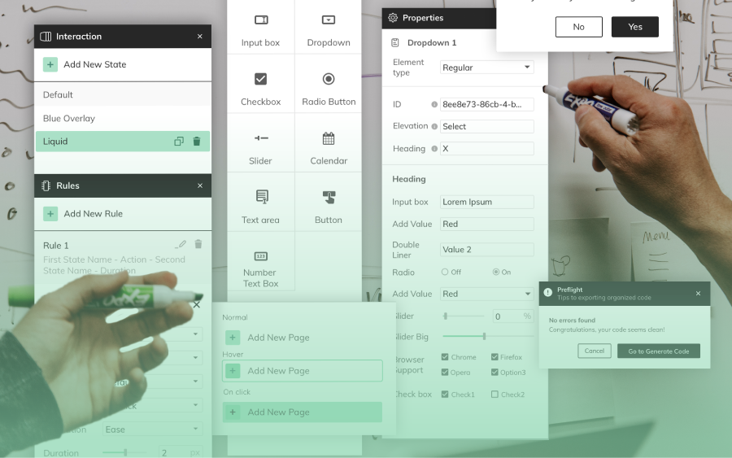

I will be fine - an audio installation questioning identity and idea of the self.
| Staging | Experience design | Generative art | Boids | Sculpture | AR filters | New Media |
ACADEMIC PROJECT | 3 MONTHS



